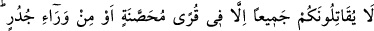
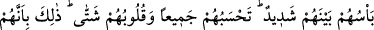
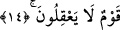

sizden korkmaları, hiçbir şey anlamamaları sebebiyledir. Bir şey anlamıyorlar ki,
Allah’ın büyüklüğünü anlayıp O’ndan gereği gibi ve hakkıyla korksunlar.
Bazı büyükler şöyle demişlerdir: Azamet sıfatı gerçekte Cenab-ı Hakk’ın sıfatı değil,
O’nu bilen âriflerin kalplerinin sıfatıdır. Azamet sıfatı onların üzerinde, örtünen
kimsenin üzerindeki ridâsı gibidir. Şâyet azamet sıfatı Azim olan Cenab-ı Hakk’ın sıfatı
olsaydı, gördüğü her şey azamet sâhibi olur, sonra o, O’nu tanımazdı. Hadis-i şerifte
şöyle buyrulmuştur: “Allah Teâlâ, aralarında münâfıklar bulunduğu halde kıyamet
günü bu ümmete tecellî eder ve Ben sizin Rabbinizim, der. Bunun üzerine onlar,
Cenab-ı Hak’tan yine O’na sığınırlar. Ama münâfıklar câhilliklerinden dolayı
yapmaları gereken tâzim ve ululamayı yapmazlar. O’nu tanıdıkları bir sıfatla tecellî
edince O’nun azametini kalplerinde bulurlar ve O’na tâzim için secdeye kapanırlar.
Cenab-ı Hak kulun kalbine tecellî edince oluşların ve olayların uyarması ondan
gider ve o kalpte Cenab-ı Hakk’a ve O’nun celâline tâzimden başka bir şey
kalmaz.”[57]
Bu âyet-i kerimede belirtildiğine göre, kulun her şeyden çok Allah’tan korkması onun
fıkıh sâhibi olmasının belirtilerindendir. İnsanların çoğu ise görüldüğü gibi kötü
durumdadır.
Peygamberimiz (s.a.): “Allah Teâlâ hayrını, iyiliğini dilediği kimseyi dinde bilgin ve
fakih kılar”[58] buyurmuştur. Âriflerden bazısı şöyle demiştir: Hak ehline göre fakih,
Mevlâsından başka kimseden korkmaz, murakabesini yalnız O’na yapar, O’ndan
başkasına da iltifat etmez, iyiliği O’ndan başka kimseden ummaz. O’nun rızâsını elde
etmek için kuşun uçması gibi uçar. Olgun insanların, yırtıcı hayvanlardan, zâlim
kimselerden ve benzeri şeylerden korkuları eksik değildir. Çünkü insanın yaratılışında
sabırsızlık ve feryad vardır. Bu sebeple nefisler korku huyu ile yaratılmıştır. Yokluktan
sonra var olmanın lezzetine hiçbir şey denk değildir. Aynı yönden yok olmayı
vehmetmenin şiddetli acısı vardır ki, onun miktarını Allah’ı bilenlerden başkası bilmez.
Dolayısıyla, her nefis, yokluğun kendisine veya yakınına ulaşmasından dolayı feryad
eder ve kaçar. Varlığının gitmesinden ürküp korkar.
Kâmil olan kişi, nefsi hakkında, bir pire ısırığından ne derece acı duyduğuna şâhid
olduğundan, insanların en hassas olanlarındandır. Bunun için de, keşif, hal ve ilim
yoluyla aslını görüp bildiğinden Allah’a olan ihtiyaç ve tevâzu ile dolu bir kişidir. İşte
bunun içindir ki, bir rasûlün, nebinin ve kâmil bir velînin kendi zamanında kulluk
dâvâsına aykırı düşecek bir iddiâda bulunduğu görülmemiştir.